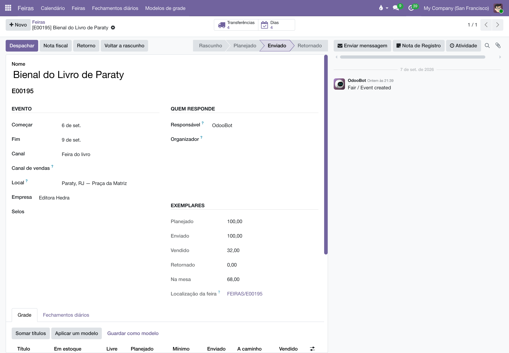
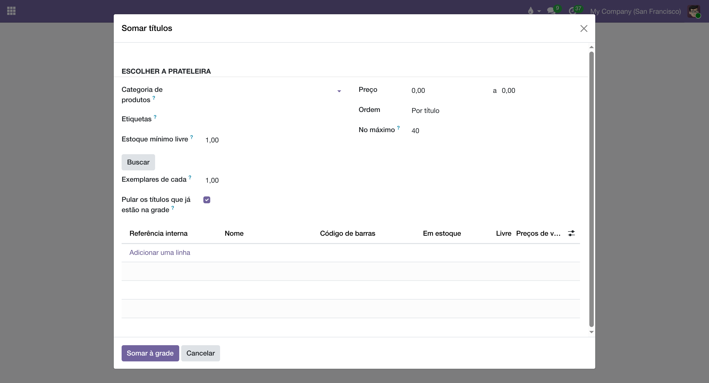
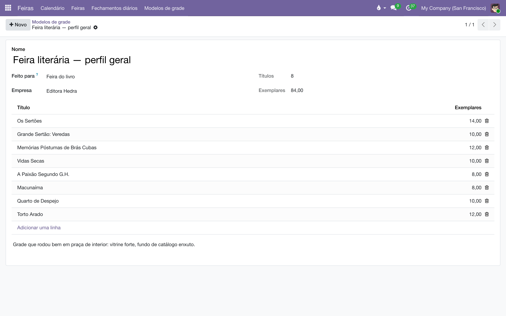
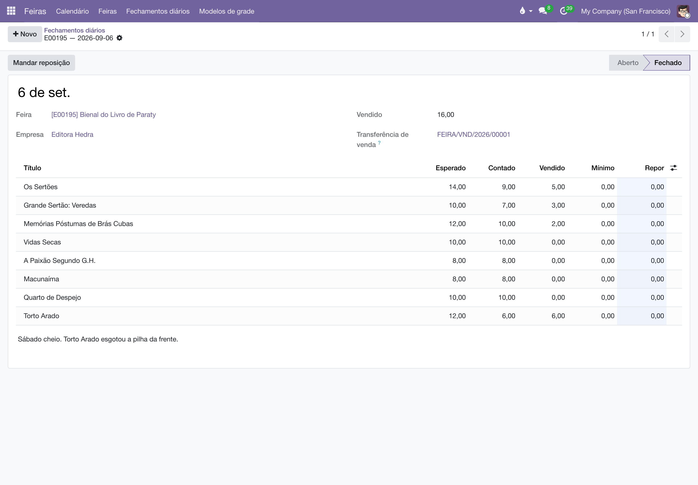
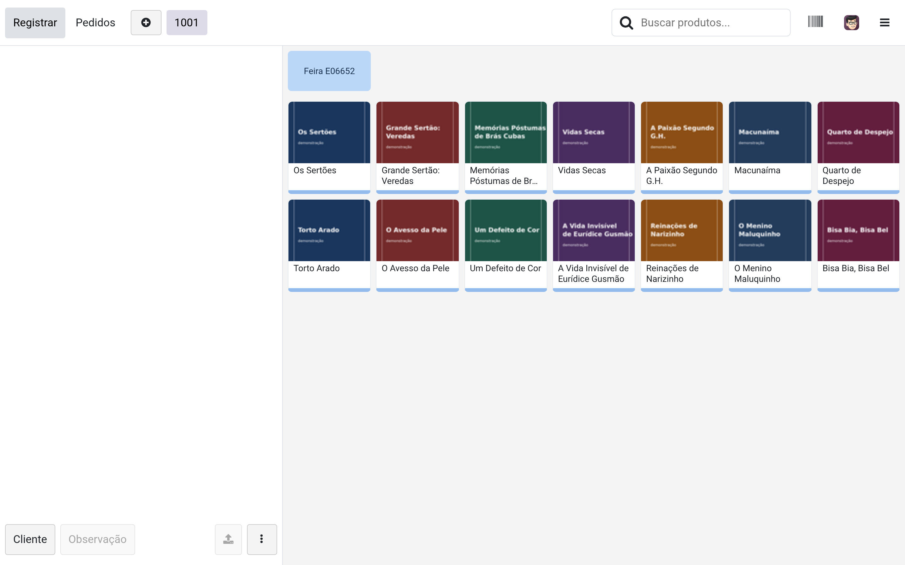
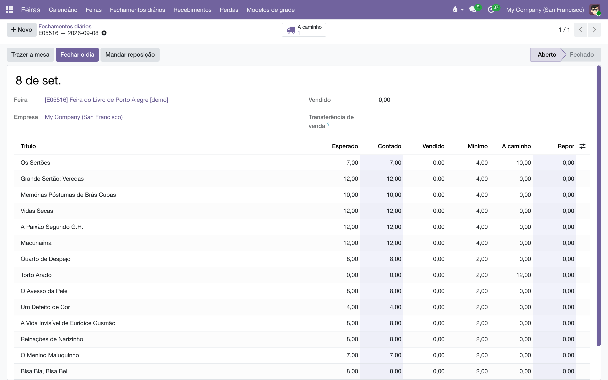
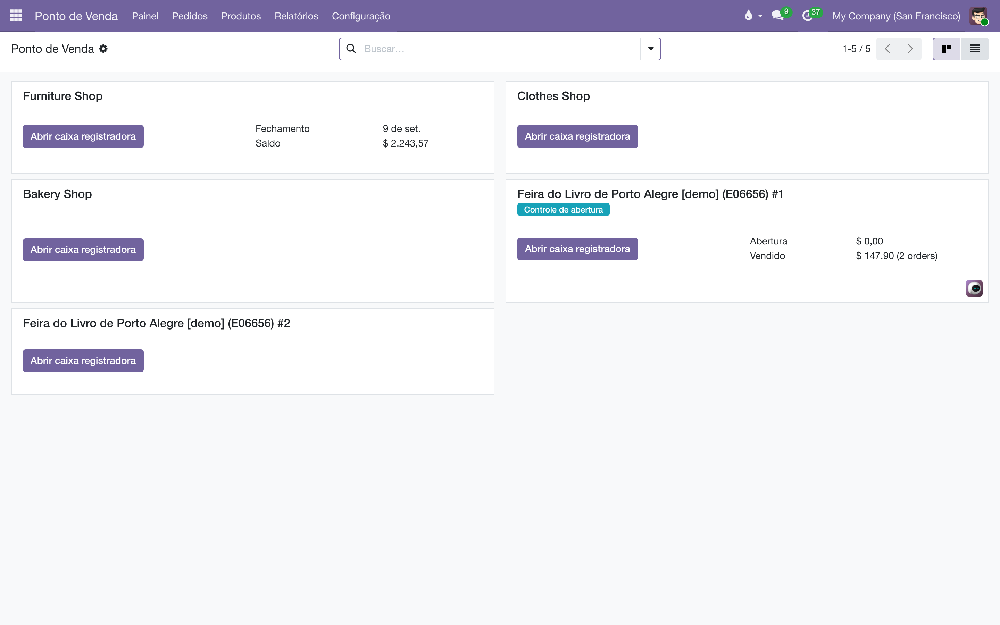
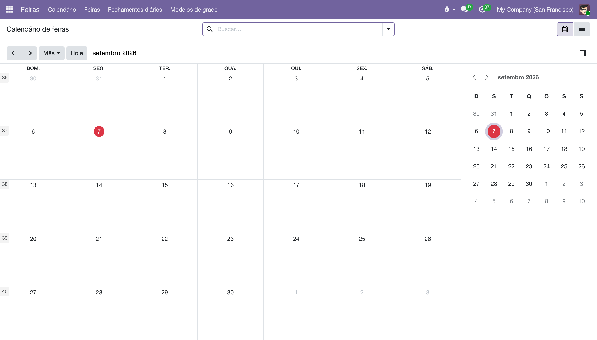

Feiras
Feira não é venda: é uma remessa temporária. O estoque sai da editora, fica dias sob a guarda de outra pessoa, vende em parte num balcão que não é o ERP, e volta incompleto.
Visão geral
Passar uma feira pelo fluxo de venda comum produz três mentiras: baixa o estoque no envio, quando o livro ainda é da editora; reconhece receita antes de existir venda; e não deixa rastro entre o que foi, o que vendeu e o que voltou. O módulo isola esse ciclo num objeto próprio.
Os conceitos que aparecem nas telas:
- Feira (numerada
E00001) — o evento. Tudo pendura nela: a grade, as remessas, os fechamentos de cada dia, o retorno. A numeração é série própria, separada da venda, para que feira não contamine numeração, comissão nem meta. - Grade — os títulos que vão, com quantos exemplares de cada. Só o planejado se digita; enviado, vendido, retornado e o que está na mesa saem dos movimentos.
- Modelo de grade — uma grade nomeada e reutilizável, com o mínimo de mesa de cada título já decidido. Feira recorrente tem grade parecida todo ano.
- Trânsito — onde a carga fica entre o armazém e a mesa, depois de despachada e antes de conferida na praça.
- Localização da feira (
FEIRAS/E00001) — onde o estoque fica enquanto está na praça. É interna, então o livro continua seu e mantém valor no balanço; mas fica fora da árvore do armazém, então não infla o "Em mãos" com exemplar que ninguém pode vender pelo site. - Fechamento diário — um por dia do evento. Conta-se o que sobrou na mesa; o vendido é deduzido.
- Canal de vendas — a equipe comercial em que o evento entra, para a feira aparecer nos relatórios ao lado da Amazon, da distribuição e da loja própria.
- Uma feira, uma empresa — o armazém de onde a carga sai, a localização, a posição fiscal e a nota são todos de um CNPJ só. Evento com títulos de mais de um selo são duas feiras, uma por empresa, cada uma com a sua remessa e a sua nota.

A escada
A feira percorre Rascunho → Planejado → Enviado → Retornado. Cada degrau é um botão no alto do formulário.
| Degrau | O que acontece |
|---|---|
| Planejar | Nasce a localização da feira e um registro de fechamento para cada dia do evento. Exige grade: planejar sem grade não é planejar nada. |
| Despachar | Saem duas transferências: FEIRA/OUT/, que o armazém valida ao despachar, e FEIRA/REC/, que quem está na feira valida ao receber. Pode ser clicado mais de uma vez. |
| Retorno | Traz de volta o que ainda está na mesa, por FEIRA/IN/, e lacra os fechamentos diários. |
Montar a grade
A aba Grade mostra, ao lado de cada título, o que existe em estoque no armazém e quanto está livre para mandar. A linha fica vermelha quando o que falta despachar é mais do que o armazém tem. Esse número é o do armazém, e não o da empresa: exemplar que já está numa mesa de feira continua sendo nosso, mas não está aqui para ser escolhido de novo.
A aba tem três botões, e nenhum deles pede que você digite título a título.
- Somar títulos — em vez de procurar um a um entre quatro mil e seiscentos, você descreve a prateleira que quer: selo ou coleção, etiquetas, assunto Thema, faixa de preço, época de publicação, ordem (por título, mais novos, mais vendidos) e um teto de quantos títulos trazer. O Buscar traz o resultado para a lista, onde você ainda tira e põe à mão antes de somar. Só o que está no armazém vem ligado: grade cheia do que não temos é grade que ninguém consegue despachar.
- Aplicar um modelo — traz uma grade guardada. Somar acrescenta ao que já está lá; Substituir limpa a grade antes — mas nunca apaga título que já foi despachado, porque o movimento já existe e apagar a linha faria a grade mentir.
- Guardar como modelo — transforma esta grade em modelo para a próxima feira. Ligando Registrar o que realmente foi, o modelo guarda o que de fato saiu, reposição incluída, que é a grade que a feira teve de verdade.

Os mesmos três botões estão no formulário do modelo de grade, para montar um modelo do mesmo jeito.

Onde existe catálogo da Metabooks, a busca ganha duas perguntas que o cadastro da casa não responde: o assunto Thema e a janela de publicação. Selo e coleção dizem de quem é o livro; não dizem para quem ele é — e feira de escola quer infantojuvenil, lançamento quer o que saiu este ano. O Thema desce pelo galho: escolher Y traz YFB junto, porque o código é hierárquico. E "mais novos primeiro" põe quem não tem data no fim da fila, não no topo.
Quem garante que chegou
O depósito despacha. Mas entre o armazém e a mesa há uma estrada, e a caixa pode não chegar. Por isso a ida tem duas pernas: o armazém valida a saída, e quem está na praça valida a chegada, conferindo o que veio na caixa.
Entre as duas, os livros estão em trânsito: não estão mais no armazém e ainda não estão na mesa. A grade mostra isso na coluna A caminho, e o fechamento do dia não conta como disponível o que ainda não chegou.
Se a caixa chega curta, os exemplares que faltam não se dissolvem: ficam parados no trânsito, e é dali que sai a pergunta "onde estão os três?". Sem essa segunda perna, o sistema jurava que o livro estava em Santos no instante em que o depósito clicou.
O fechamento diário
Evento de vários dias não se apura só no fim. Todo dia, quando a praça fecha, conta-se a mesa. O sistema não pergunta o que vendeu: ele deduz.
vendido no dia = saldo na abertura + reposição do dia − contagem do fim
- Abra o dia em , ou pela aba do mesmo nome dentro da feira.
- Trazer a mesa preenche a contagem com tudo o que deveria estar lá, já igual ao esperado.
- Corrija para baixo o que vendeu. Num balcão de feira, com o celular na mão, é menos digitação do que lançar título a título o que saiu.
- Confira a coluna Repor, que já vem preenchida a partir do mínimo de mesa, e corrija o que quiser.
- Fechar o dia gera a transferência
FEIRA/VND/com a diferença, despacha a reposição pedida, e o saldo da localização volta a bater com a mesa física.
Título que esgotou continua na lista, com zero: é justamente ele que se quer repor, e sumir da tela obrigaria você a lembrar de cabeça o que acabou. Título que nunca chegou a ser despachado não aparece, porque não está na mesa.
A contagem não se digita linha a linha: ela vem da mesa pelo botão. Por isso não há como acrescentar nem apagar títulos aqui — acrescentar inventaria título que não foi para a feira, e apagar esconderia exemplar que está lá.
Contagem maior que o esperado é recusada. Isso não é venda negativa: ou a reposição não foi lançada, ou a contagem errou. Fechar assim inventaria estoque que nunca saiu do armazém.

O caixa do PDV na feira
Com o módulo liber_fairs_pos instalado, o cadastro da feira pergunta Caixas: quantas frentes de pagamento o evento vai ter. Uma fila só é uma fila que não anda, e feira grande tem duas ou três. O botão Caixa abre essa quantidade, e cada caixa aparece no Ponto de Venda com o nome da feira e o código entre parênteses — Feira do Livro de Porto Alegre (E00023) #1 —, porque quem abre o PDV procura a feira, não o número dela.
O caixa vende o estoque que está na mesa: a operação dele nasce apontada para a localização daquela feira, e não para o armazém. Quem está na praça vê a quantidade que tem ali, não a que existe a seiscentos quilômetros.
O balcão abre com os títulos da grade, e só eles, com a capa de cada livro — a mesma imagem do produto, que nos títulos da casa vem da Metabooks. Uma mesa de feira tem catorze títulos, e procurá-los dentro do catálogo da casa, com fila na frente, é trabalho que não precisa existir.

O que faz a conta fechar é o carimbo: a transferência que o PDV gera nasce como venda da feira. Sem isso a feira não veria a saída e o fechamento diário descontaria a mesma venda outra vez — a mesa terminaria negativa e o relatório contaria o dobro. Com isso, o fechamento diário deixa de ser a fonte da venda e passa a ser a conferência dela: a diferença entre a sua contagem e o que o caixa registrou é justamente o que se quer enxergar — venda não lançada, extravio.
A coluna No caixa é o que os caixas da feira venderam até aqui — do começo do evento até aquele dia, e não só naquele dia. É o número que casa com o Esperado, que também desconta toda a venda do evento; ler os dois lado a lado só fecha se falarem do mesmo período. A janela de um dia só deixava venda de fora (sessão aberta na véspera, venda depois da meia-noite) e a coluna dizia zero numa mesa que tinha vendido. Quem quiser saber como foi o sábado liga a coluna Vendido no dia, que fica escondida por padrão.

Devolução no balcão devolve o exemplar para a mesa. Pedir o retorno fecha os caixas antes de contar a mesa — venda registrada depois da contagem faria o retorno pedir livro que já saiu — e some com eles da lista de quem opera PDV todo dia. Eles são arquivados, não apagados: a venda que passou por ali continua existindo, e é ela que diz quanto a feira rendeu. Se um caixa tiver pedido sem pagamento, o retorno para e diz qual: venda começada e não paga é decisão de quem está no balcão.

Uma exigência contábil que aparece tarde se ninguém avisar: o caixa só fecha se cada título vendido tiver conta de receita — no produto ou na categoria dele. O caixa vende sem isso, e trava na hora de encerrar, com dinheiro na gaveta. Por isso o botão Caixa avisa no histórico da feira, na abertura, quais títulos estão sem conta. A empresa também precisa da conta de recebível do Ponto de Venda nas Definições de contabilidade.
Duas coisas o caixa não resolve. O cupom fiscal (NFC-e) depende de código de segurança por empresa na Sefaz e ainda não está aqui. E a maquininha da InfinitePay não conversa com o Odoo: ela entra como forma de pagamento digitada, e a taxa se concilia depois, no financeiro.
Recebimentos
Conferir carga não é rotina de depósito, é rotina de confusão de feira: a caixa chega no meio do movimento. O menu lista as chegadas — na mesa e de volta no armazém — com duas colunas: Recebido, o que quem mandou diz, e Conferido, o que quem recebeu contou. Marque as linhas e aperte Confirmar o que chegou; fica registrado quem conferiu e quando, no histórico do movimento e no da feira.
Faltou algo? A perda nasce com o status Não recebido (a explicar), e a explicação vem depois, em Perdas.
As perdas
O motivo escolhe o destino. Vendido e não lançado e Doado na feira saem para clientes, porque o livro foi para a mão de alguém. Avariado e Extraviado são baixa de estoque. Cada linha guarda o custo congelado no momento do registro, e é esse número que decide o que se manda na próxima vez.
A volta também tem duas pernas: a praça embala e despacha, o armazém confere o que chegou, em Recebimentos. O botão Retorno fecha tudo no clique — ele é o gesto de quem já embalou, com a van na porta: a mesa esvazia, o evento encerra, os caixas saem da lista e as contas da equipe ficam prontas. Deixar a remessa esperando uma segunda validação criava um meio-termo em que a feira não fechava e a equipe já tinha ido embora.
A falta do retorno, portanto, é a da estrada: a diferença entre o que a praça mandou e o que o armazém contou. Ela nasce em Perdas como Não retornado (a explicar), e os exemplares ficam visíveis no trânsito até alguém dizer o que houve.
Falta acusada na conferência nasce como pergunta: Não recebido (a explicar) na ida, Não voltou (a explicar) na volta. Nenhuma das duas baixa nada — o exemplar fica parado no trânsito, porque ninguém sabe ainda o que houve com ele. Quando você escolhe o motivo de verdade, a baixa acontece na hora: sai uma transferência que tira o exemplar do trânsito para o descarte ou para o cliente, conforme o motivo, e ela fica registrada na coluna Baixa da linha. Explicação dada com atraso, quando o exemplar já saiu do trânsito por outro caminho, registra o motivo e avisa no histórico que não havia estoque a mover.
O que a coluna Na mesa mostra é o que entrou na mesa menos o que saiu dela — isto é, o estoque que está de fato na localização da feira. Exemplar parado no trânsito não conta como mesa: uma feira que voltou tem mesa zero, e a diferença vive em Perdas.
As perdas de todas as feiras ficam em , agrupadas por motivo.
A nota de simples remessa
Livro na estrada sem nota é livro apreendido. A remessa para uma feira não é venda: a mercadoria não muda de dono ao subir na van, muda de lugar. Por isso ela sai como simples remessa, com CFOP de remessa para exposição ou feira, e o destinatário é a própria editora.
Com a carga já despachada, o botão Nota fiscal aparece no alto da feira. Ele emite uma nota por transferência concluída, no diário REM-F, sob a posição fiscal de feira configurada em . A nota nasce baixada, porque a editora não pode ficar devendo a si mesma, e declara a quantidade efetivamente despachada, nunca a planejada.
Uma carga, uma nota. A reposição do meio da feira viaja com a nota dela, e apertar o botão de novo não declara outra vez o que já viajou.
A nota da volta sai no mesmo clique do Retorno, porque ela viaja com as caixas: nota que só saísse na chegada deixaria o caminhão rodar sem documento. É uma nota de crédito, que anula a da ida — a mercadoria saiu e voltou, e nada mudou de dono no caminho —, e referencia a chave da nota de ida.
Há uma diferença entre as duas que parece inconsistência e não é. A nota de ida declara o que foi efetivamente despachado, porque sai depois de o armazém separar. A da volta declara o que está sendo devolvido, porque sai quando as caixas deixam a feira. A diferença entre o que a nota da volta diz e o que o armazém recebe aparece como divergência de recebimento, que é onde essa conversa tem de acontecer.
Se a posição fiscal de retorno da empresa não estiver configurada, o retorno acontece do mesmo jeito e a feira registra no histórico o que falta ajustar. Deixar as caixas na praça esperando alguém preencher um campo em Definições seria trocar um problema de cadastro por um problema de logística.
Reposição durante o evento
Um título vende no sábado e falta no domingo. O lugar de pedir a reposição é o fechamento do dia, na coluna Repor ao lado da contagem: é a contagem que acabou de mostrar o que faltou. Pedir noutro lugar obrigaria quem está no balcão a lembrar de cabeça e a procurar cada título outra vez numa lista de dezenas.
Preencha a coluna e feche o dia: sai tudo no mesmo clique. O botão Mandar reposição está sempre lá, com o dia aberto ou fechado, porque o dia fecha às onze da noite e a reposição às vezes se decide depois.
Na maior parte das vezes você não vai precisar preencher nada. Quem monta a grade fixa, por título, um mínimo de mesa — na grade da feira ou já no modelo, de onde ele viaja junto. A partir daí a coluna Repor se preenche sozinha a cada contagem: é o mínimo, menos o que sobrou, menos o que já está a caminho. O número é sugestão, não ordem; escreva por cima sempre que a praça disser outra coisa, que amanhã chove ou que vem escola.
A coluna A caminho tem um botão no alto do fechamento que abre a transferência: ela diz que falta chegar, e o botão diz por onde. É o que faz a conta fechar quando ninguém pede reposição todo dia, que é o normal. Um pedido sai numa noite e chega dois dias depois; sem descontá-lo, a contagem do dia seguinte mandaria pedir tudo de novo, e a feira receberia em dobro justamente o título que estava faltando.
O mínimo não pode ser maior que os exemplares que vão. Pedir dez e exigir quinze na mesa seria uma mesa que nasce abaixo do próprio mínimo.
Mecanicamente é o de sempre: a grade sobe e sai uma segunda transferência com a diferença, contra a mesma localização. Uma feira, várias remessas, um saldo só. A reposição tem de ser concluída antes da contagem do dia seguinte, e é isso que faz a abertura do novo dia somar o que sobrou com o que chegou.
O lacre
Uma feira acaba quando a mercadoria volta, não quando a data do evento passa. Ao registrar o retorno, os fechamentos diários são lacrados: viram histórico, e não aceitam mais pedido de reposição — não há praça para onde mandar.
Dia que ninguém chegou a fechar é fechado nesse momento, e sem inventar contagem: a praça esvaziou e aquela contagem não vai mais acontecer. O que ele deixou de registrar aparece na diferença do retorno, que é onde essa conversa tem de acontecer.
O calendário
Em , os eventos aparecem no período em que acontecem, coloridos por canal. A janela logística — envio e retorno — é sempre maior que o evento e mora nos campos, não na barra: pintar a janela no calendário faria a feira parecer durar onze dias quando ela dura quatro.

O número do evento
Cada evento nasce com um número em série própria, no formato EV/2026/00001. Ele não é E00001 de propósito: um "E" com cinco dígitos se confunde com os B e C dos pedidos, e evento não é pedido — é o disparador do que vem depois (remessa, caixa, retorno, comissão), como a CO da consignação. É esse número que vai também para o analítico.
O que a casa decide uma vez
Em ficam três escolhas que não mudam de feira para feira e que, se ficassem em cada evento, seriam digitadas erradas mais cedo ou mais tarde:
| Definição | Para quê |
|---|---|
| Plano analítico dos eventos | Onde nasce o analítico de cada evento. Sem ele o evento não tem onde juntar o que custou e o que deu. |
| Serviço que paga a equipe | A linha usada na conta a pagar do fim do evento: diárias e comissão. |
| Responsável pelos eventos | Quem responde pela equipe de feiras. Todo evento novo nasce no nome dessa pessoa, e cada evento pode trocar. |
As posições fiscais da remessa e do retorno ficam ao lado das outras configurações de nota, no módulo fiscal.
O analítico do evento nasce sozinho quando o evento é planejado, com o número e o nome dele. É nele que a conta a pagar da equipe cai — e é por ele que se pergunta, no fim do ano, quanto uma feira custou.
O desconto da feira
O desconto praticado é um número do evento, digitado no cadastro, e não algo que cada um resolve no balcão. Ele não é um botão para alguém apertar: é o preço. O caixa nasce com uma lista de preços da feira, e o balcão já mostra o valor com desconto — para o cliente e para quem vende. Uma lista por feira, compartilhada pelos caixas dela; mudar o percentual muda o preço.
A diferença entre os dois perfis está no que vem além disso: o gerente pode digitar um desconto a mais, linha a linha; o operador não digita desconto nenhum — o preço dele já é o preço da feira. Trocar o perfil de alguém troca a chave junto. Mudar o desconto alcança os caixas que ainda não estão vendendo; o que estiver com sessão aberta só recebe o número novo depois de fechar, porque o Ponto de Venda não deixa mexer em caixa em operação — e faz bem.
O balcão de cada um
Cada pessoa da escala abre o caixa dela, e só ele: quem foi contratado para três dias de feira não vê a loja da casa, nem o caixa da colega. O balcão abre com os títulos da grade, com a capa de cada livro e — no canto do cartão — quantos exemplares ainda há na mesa. Zerou, o número fica vermelho: é o título que acabou, e quem está no balcão precisa ver isso antes de prometer ao cliente.
Esse número é o da mesa, não o do armazém. O que existe a seiscentos quilômetros não ajuda quem tem fila na frente. Ele é lido ao vivo: na abertura, de tempos em tempos e depois de cada venda — inclusive quando a mercadoria chega com o caixa já aberto. Sem rede, fica valendo o último número conhecido, que numa feira com wifi ruim é melhor do que um zero inventado.
E quando a feira tem desconto, o cartão mostra o de-por: o preço cheio riscado e o preço da feira ao lado. É o que faz o desconto valer alguma coisa para quem está do outro lado do balcão. O mesmo de-por aparece na linha do pedido e no cupom — R$ 89,90 (50%) embaixo do título —, porque é ali que o cliente confere o que está levando.
Comissões, diárias e o que a perda come
A aba Comissões abre depois do Planejar: é ele que monta os dias e abre o analítico do evento, e o que se combinasse antes ficaria pendurado num evento que ainda pode não acontecer. A escala da equipe, essa, se faz desde o rascunho.
Ali se digita, por pessoa, três coisas: o percentual de comissão, o valor da diária e quantos dias ela trabalhou (que já nascem com a duração do evento). O resto é conta:
| Coluna | De onde vem |
|---|---|
| Vendido | O que o caixa daquela pessoa vendeu. |
| Comissão | O percentual sobre esse vendido. Quem vendeu mais, ganha mais. |
| Diárias | O valor combinado vezes os dias. |
| Rateio da perda | O que sumiu sob a guarda da equipe, a custo, dividido igualmente entre ela. |
| A pagar | Comissão mais diárias, menos o rateio. |
| Ainda devido | O que o rateio comeu além do que a pessoa tinha a receber. |
A perda rateia igual porque a mesa é guarda coletiva: ninguém sabe de quem era o exemplar que sumiu, e cobrar de quem vendeu mais seria punir quem trabalhou mais. Isso precisa estar claro para a equipe antes do evento: quem não vende o suficiente para cobrir a própria parte da perda vê a diária encolher.
Nem toda perda é deles. Só entra no rateio o que sumiu sob a guarda da equipe — o que a mesa deveria ter e não entrou na caixa, a avaria, o extravio no meio do movimento. O exemplar que saiu do depósito e nunca chegou na praça sumiu na estrada; o que o depósito não achou simplesmente não foi. Nenhum dos dois é da conta de quem estava no balcão, e a coluna A equipe paga, em Perdas, diz qual é qual — o gerente pode mudar quando souber de algo que o sistema não sabe.
Uma decência de desenho: conta a pagar nunca é negativa. Ninguém paga para ter trabalhado. O que a comissão e a diária não cobrirem fica escrito na coluna Ainda devido, para a conversa acontecer com número em cima da mesa — e não vira cobrança automática.
Com o evento já retornado, o botão Gerar as contas a pagar cria uma conta por pessoa, com o nome do evento na referência e o analítico do evento na linha. Antes do retorno ele recusa: o rateio depende do que a conferência apurou, e pagar antes é pagar por cima de um número que ainda vai mudar. Quem ficou com zero a receber não ganha conta nenhuma.
A equipe do evento
Na aba Caixas do evento entram as pessoas que vão trabalhar nele: escolhe-se o contato e o Perfil. Cada pessoa ganha o seu caixa, e o acesso ao sistema vem junto — enquanto o evento estiver na rua.
| Perfil | O que faz |
|---|---|
| Atendente | Vende no balcão do caixa dela. E, se estiver sozinha na praça, confere a carga que chega: caixa de livro chega no meio do movimento, e esperar alguém para dizer "chegou" é deixar a mercadoria na calçada. Fora isso, nada — nem perdas, nem grade, nem os outros eventos da casa. |
| Supervisor | Tudo o que a atendente faz, mais o que só quem está na praça resolve: entra no caixa das colegas para destravar problema, dá desconto acima do praticado, conta a mesa, fecha o dia, registra perdas e manda a mercadoria de volta quando acaba. Vê o evento dele — não os dos outros. |
O supervisor é circunstancial, e é por isso que o planejamento não é dele. Ele aparece para tocar o evento na rua, e o evento foi montado antes: a grade, os modelos, a remessa e — principalmente — quanto cada um ganha são decisões de quem monta. Na tela dele não existem o botão Planejar, o botão Despachar, os modelos de grade nem a aba Comissões; a grade do evento se lê e não se muda. Combinar a própria remuneração seria ser juiz em causa própria, e a recusa está no sistema, não só na tela escondida.
O acesso é temporário por desenho. Ele é concedido quando o evento é planejado e retirado quando a mercadoria volta: encerrado o evento, essa gente não entra mais. Quem estiver escalado em outro evento aberto continua entrando por causa dele. E quem é do Comercial da casa não perde nada: o papel permanente vem do perfil da pessoa, e não daqui.
Contato sem conta de acesso aparece como Sem conta: essa pessoa trabalha o balcão, mas não abre o sistema. Não é erro — é o caso comum de quem é contratado para três dias.
Quem faz o quê
| Perfil | Pode |
|---|---|
| Assistente do Comercial e da Logística | Opera a feira que existe: monta a grade, despacha, conta a mesa, fecha o dia, registra o retorno. |
| Gerente do Comercial e da Logística | Tudo isso, mais abrir e apagar feira. |
Abrir uma feira compromete estoque da casa fora da casa, por dias, sob a guarda de outra pessoa. É decisão de gerente, pelo mesmo motivo que abrir contrato de consignação é.
O que ainda não está aqui
Este módulo está em protótipo, e o que existe hoje são as duas primeiras fases do plano. Não estão implementados:
- o lançamento contábil das perdas: a valoração de estoque é periódica, então o lançamento tem de ser explícito, e depende de definir a conta de despesa de cada motivo;
- a importação do extrato do balcão de cartão e o confronto com o vendido apurado aqui;
- o faturamento depois do retorno, e o painel de retorno do canal.
Enquanto isso, o dinheiro não passa por este módulo: o fechamento diário move estoque e nada mais.